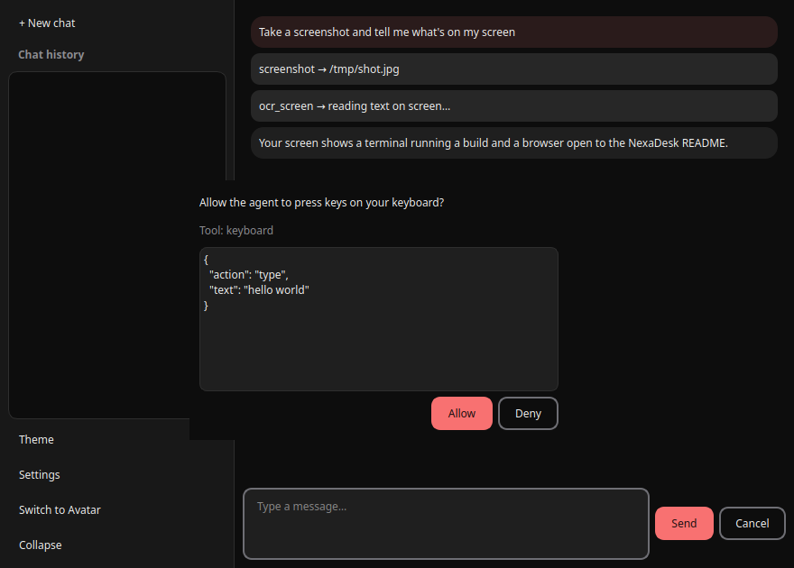
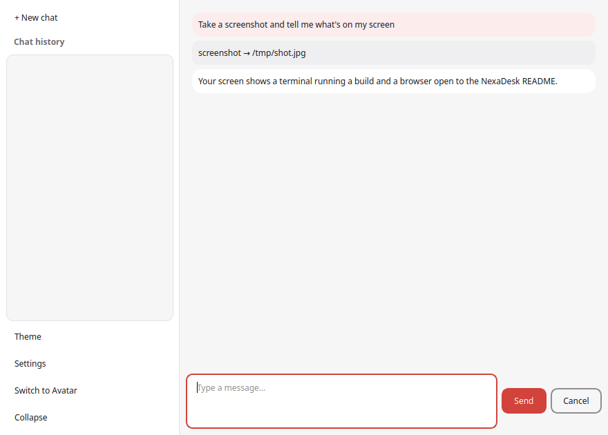
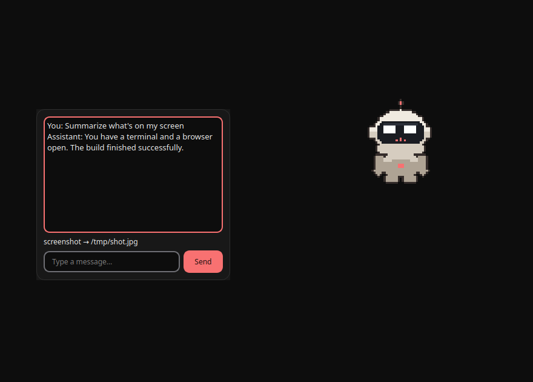

Free & open source · MIT license
Talk to your computer.
It answers with actions.
NexaDesk is a local-first desktop AI assistant for Linux and Windows. Chat with tools, watch an animated avatar work, or let it control your screen — all in one app.
Python 3.12 · PySide6 · Works with Ollama, Groq, NVIDIA, Google & any OpenAI-compatible API



Your AI assistant that does not just talk. It screenshots, reads, clicks, and types for you.
What you get out of the box
Chat that uses tools
Ask it to take a screenshot, read text on your screen with OCR, move the mouse, or manage windows. It calls the tools and shows every step.
Animated avatar mode
A pixel-art character with a speech bubble that reacts in real time: idle, thinking, working, speaking, or error. Switch modes in one click.
Local-first privacy
Run fully local models through Ollama. Your API keys stay in a local secrets file that is never committed or packaged. Chat history lives in a local SQLite database.
Dark, light & bilingual
Switch between a near-black dark theme and a soft pastel light theme instantly. Full Turkish and English interface with instant language switching.
Screen control built in
Screenshot, OCR, mouse and keyboard control, window management — the server ships embedded in the package. No separate install required.
Any provider you like
Ollama for fully local inference, or connect Groq, NVIDIA NIM, Google Gemini, and any OpenAI-compatible endpoint. Change providers in Settings.
Up and running in three steps
-
Download and install
Grab the .deb, tar.gz, or Windows zip from the releases page. On Linux, one
dpkg -iand you are done. -
Pick your provider
On first launch, choose Chat GUI or Avatar mode. Open Settings to connect Ollama locally or paste an API key for Groq, NVIDIA, or Google.
-
Start talking
Type a message, or ask it to screenshot your screen and summarize what it sees. Switch to avatar mode any time from the sidebar.
Frequently asked questions
Which AI providers does NexaDesk support?
Ollama (fully local), Groq, NVIDIA NIM, Google Gemini, and any OpenAI-compatible endpoint. You can switch providers at any time in the Settings window.
Does it work offline?
Yes, if you use Ollama with a local model. Everything runs on your machine: chat, history, avatar, and screen control. No internet required.
What can the screen control do?
Take screenshots, run OCR to read text on screen, control the mouse and keyboard, and manage windows. The server is embedded in the app and starts automatically when enabled.
Where is my data stored?
Chat history is stored in a local SQLite database. API keys live in a secrets file with restricted permissions that is never included in packages or the repository.
Which operating systems are supported?
Linux (Ubuntu/Debian .deb and portable tar.gz) and Windows 10/11 (zip). macOS is not officially supported yet but may work from source.
Can I build it from source?
Yes. Clone the repository, create a Python 3.12 virtualenv, install requirements, and run python -m ui.app. Full instructions are in the README.
Is the avatar mode just for fun?
It is a full working mode. The avatar shows live state (thinking, working, speaking) while the same agent runs tools in the background. Switch between chat and avatar at any time without losing the conversation.
How do I switch between dark and light themes?
One click on the Theme button in the sidebar, or from Settings. The change applies instantly across the whole app. Turkish and English switch the same way.
Ready to try it?
NexaDesk is free, open source, and runs entirely on your machine.